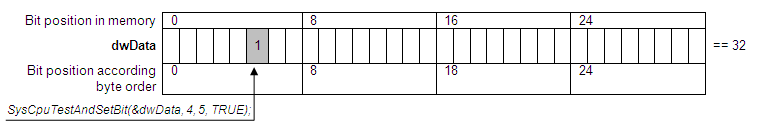
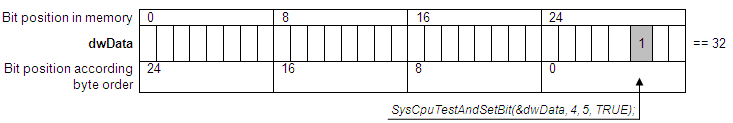
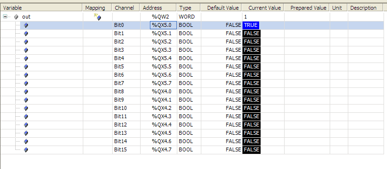

5.8.12. Byte order specific data handling in IO driver¶
When developing an IO driver for CODESYS Control, the byte order of the target platform must be regarded. This chapter describes how to create a portable IO driver which could be executed on both Motorola- and Intel-byte order platforms.
5.8.12.1. Bits handling in BYTE/WORD/DWORD¶
One of the basic tasks during driver development is to control separate bits. For example this could be the handling of digital inputs/outputs or handling of control bits in the registers of your peripheral device.
The CODESYS runtime system provides several functions for bit handling to the drivers’ developer.
The function SysCpuTestAndSetBit() sets (bSet = 1) or resets (bSet = 0) a specified bit in the bit string with length nLen. Pointers to data must correspond to the type which is specified by nLen. The function will return ERR_OK if after the operation the bit has a changed value. The usage of this function is thread- and interrupt safe. If you want to set- or reset a bit within a WORD or DWORD, the behavior of the function depends on the byte order of the platform. Let’s consider how bits are handled on Motorola and Intel byte order platforms.
For example the following call is executed
SysCpuTestAndSetBit(&dwData, 4, 5, TRUE):
Platform with Intel-byte order:
Platform with Motorola-byte order:
As shown in the picture above, the function sets the bits within the DWORD according to the byte order of the platform. That means that the value of the data accessed by pAddress is independent of the byte order of the platform, but the appropriate, different bit number is set in memory. In this example on both kinds of platforms the value of the accessed data is equal to 32. But while bit number 5 is set on Intel byte order,, we are setting bit 29 on Motorola byte order.
If the function SysCpuTestAndSetBit() is used for exchanging data between several software components of the firmware (for example for tasks synchronization), the position of the bits in memory controlled by the function doesn’t matter because all intercommunicating parts have the same byte order and correspondingly access the same memory by the same bit number.
To set/reset a specific bit in the bit string independently of byte order you can use the following fact. The behavior of the function is independent of the platform if nLen = 1, e.g. it the function accesses bit in byte. So the following code will handle the same bit in memory on Motorola and Intel byte order platform:
unsigned int BitOffsetInDword;unsigned int BitOffsetInByte;
ByteOffset = BitOffsetInDword / 8;
BitOffsetInByte = BitOffsetInDword % 8;
pbyData = &dwData;
pbyData = pbyData + ByteOffset;
SysCpuTestAndSetBit(pbyData, 1, BitOffsetInByte, TRUE);
This code for example could be used for handling a special bit in the control register of any peripheral device.
RTS_RESULT SysCpuTestAndSet(unsigned long* pul,int iBit):
This function is used for testing and setting a bit in a DWORD.
RTS_RESULT SysCpuTestAndReset(unsigned long* pul,int iBit):
This function is used for testing and setting a bit in a DWORD.
All these functions are available in C and IEC.
Attention
Please always use a pointer to correct the data type in these functions. Functions SysCpuTestAndSet/SysCpuTestAndReset may never be used for controlling a bit in a Byte, even if the bit number was always expected to be less than 8. Such code will be executed without any problems on an Intel CPU but it will cause a damage of the memory because the number of the bit will not fit into the byte specified by the pointer. When you are using the newer interface SysCpuTestAndSetBit() you will not encounter these problems, because the pointer now points to a BYTE and not to a DWORD anymore.
5.8.12.2. Helper functions for I/O update¶
One of the main tasks during I/O driver development in the runtime system is writing I/O update functions (see _io_drivers_interfaces) which are responsible for coping I/Os values from/to the hardware (bus). Target and bus could have different byte order. For example in case of Modbus the I/Os are transmitted in Motorola byte order but the target might have Intel byte order. To simplify the handling of Ios the runtime system provides several helper functions to the driver developer:
IoMgrCopyInputLE()
IoMgrCopyInputBE()
IoMgrCopyOutputLE()
IoMgrCopyOutputBE()
Postfix LE of the helper functions means that the bus has Little-Endian (Intel) byte order and accordingly BE means Big-Endian (Motorola) byte order. The byte order of the target platform is detected automatically.
5.8.12.3. Representation of bit-fields in IO configuration¶
The values of I/Os can be monitored and controlled in the I/O configuration of a device. The standard possibility to represent digital Ios is using bit fields (see Bitfields). If the target has Intel byte order the bit channels will be displayed in the following way:
If the target has Motorola byte order, the bytes inside the word will be swapped. Therefore the Bytes within the Word will be swapped to the target byte order.
CODESYS provides a possibility to change the representation of a bit field and swap bytes correspondingly to the type used in the IO configuration. For this purpose please define a setting in the device description of the PLC as described in chap 0. This helps to make the representation more user friendly and independent from a target byte order.
